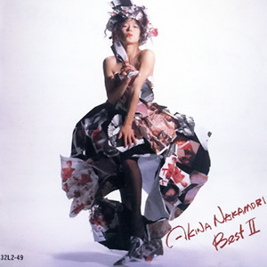

最佳专辑：第4张
发行年份：1988年
发行日期：12月24日
| 歌名 | 作词 | 作曲 | 编曲 |
|---|---|---|---|
| ノンフィクション エクスタシー | さかたかずこ | さかたかずこ | 椎名和夫 |
| TATTOO | 森由里子 | 関根安里 | EUROX |
| DESIRE -情熱- | 阿木燿子 | 鈴木キサブロー | 椎名和夫 |
| TANGO NOIR | 冬杜花代子 | 都志見隆 | 中村哲 |
| BLONDE | BIDDU-WINSTON SELA / 麻生圭子 (日本語詞) | BIDDU-WINSTON SELA | 中村哲 |
| I MISSED “THE SHOCK” | Qumico Fucci | Qumico Fucuci | EUROX |
| AL-MAUJ (アルマージ) | 大津あきら | 佐藤隆 | 武部聡志 |
| Fin | 松本一起 | 佐藤健 | 佐藤準 |
| ジプシー・クイーン | 松本一起 | 国安わたる | 小林信吾 |
| 難破船 | 加藤登紀子 | 加藤登紀子 | 若草恵 |
首发规格：黑胶 LP: 28L1-49，卡带 CT: 28L4-49，CD: 32L2-49
唱片公司：Reprise Records，Warner Pioneer
排行榜：Oricon公信榜专辑、卡带、LP、CD周榜第1位，1989年度专辑榜第4位
再发行：
1989年10月10日 - GOLD CD: 36L2-5105
1991年6月17日 - CD: WPCL-427
2006年6月21日 - CD、数码下载: WPCL-10291
2007年6月6日 - 数码下载
2012年8月22日 - SACD/CD: WPCL-11149
2018年7月4日 - LP: WPJL-10098
2018年7月25日 - CD: WPCL-12905
2020年11月3日 - LP: BRIDGE-309/10